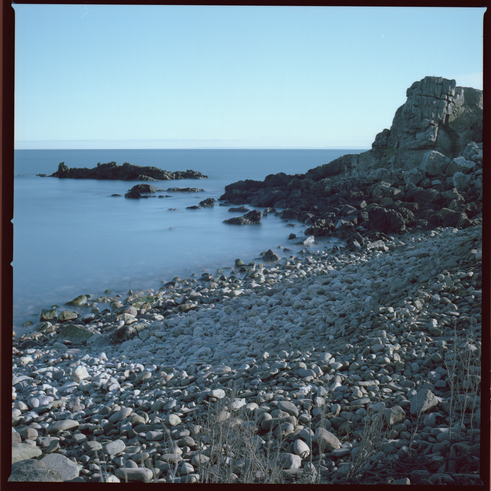
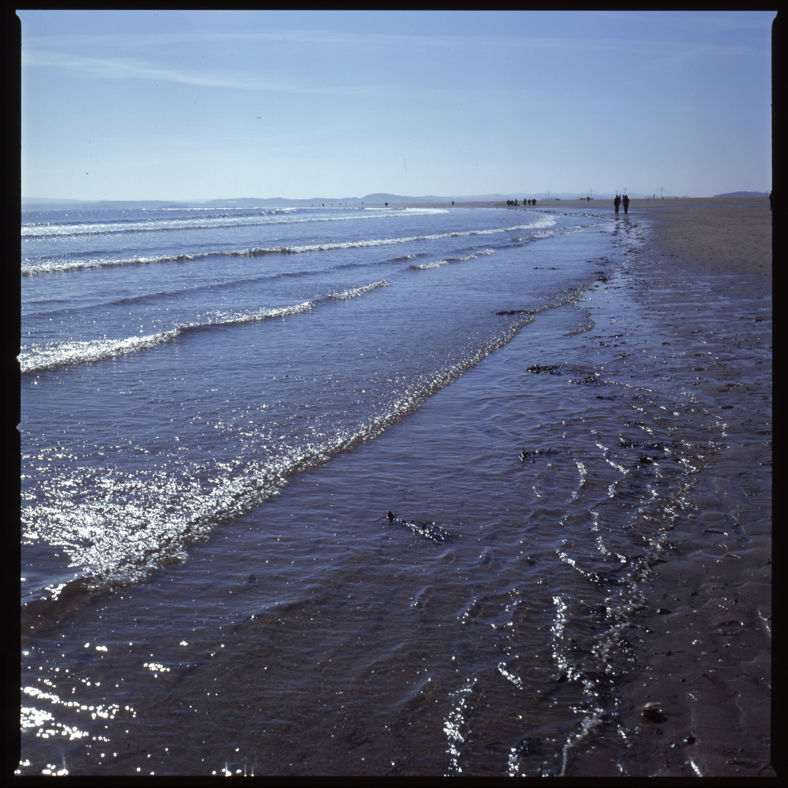

Three 120 films
 Kinghorn beach, Fife Hasselblad, E100
Kinghorn beach, Fife Hasselblad, E100
I sort of lost track of photography in the first part of this year, not least film photography. There were 3 120 films kicking about for a while, which I eventually sent to AG on 3rd April 2021 for developing and scanning. The negatives came back all square, with telltale Hasselblad notches that told me they were taken in my 503CW.
| Brand | Type | ISO | Format | Exposures | Camera | Lens |
|---|---|---|---|---|---|---|
| Kodak | T-Max BW Pan | 400 | 120 | 12 | Hasselblad 503CW | Zeiss 80mm F2.8 C |
| Kodak | Portra | 160 | 120 | 12 | Hasselblad 503CW | Zeiss 80mm F2.8 C |
| Kodak | Ektachrome E100 | 100 | 120 | 12 | Hasselblad 503CW | Zeiss 80mm F2.8 C |
I hadn’t been in the habit of recording exposure details this year, either, so there’s a bit of guesswork in identifying the subject of the images. From a digital note on my phone:
TMY BW - From the Agfa?
Portra 160 maybe Hasselblad
E100 — Hasselblad on Kinghorn / Burntisland beach 3 April
Possibly — Hasselblad Portra Crail
1 rock at f/16 about 1/8s
2 same Lee 10 stop 2 1/2 min inc 30 sec for rf
Scanned results were disappointing: dust on the BW, dust and only 11 frames on the Portra, and bands/rainbow stripes on the E100. AG said the dust wasn’t their problem, nor was the fact that I thought I had ordered TIFFs and received jpegs. I certainly won’t be using them again for this service, which was 35 quid on top of processing. They did offer to rescan the slides.
I bought some Digitaliza negative holders from Lomography over the summer and tried them rescanning some of these images. I had to fight a bit with the Epson website to download the driver for the MacBook Air I am using, which runs macOS Big Sur 11.4 but the first scan out at 600 dpi wasn’t bad, and was certainly better than the scans I had from AG.
The next strip – the Digitaliza does a whole strip at a time – was from the Portra and was also OK. This image was an experiment with the super-dark Lee neutral density filter and a long exposure. It’s OK, and proves it can be done but it seems tasteless to me, to use film this way. I probably won’t do it again.
 Crail beach. Hasselblad 503CW with Lee Big Stopper
The last strip was of Kodak Ektachrome E100, for which I switched the scanner’s colour management off. These were very nice indeed, with just a trace of banding visible in the sky on a sunny walk on Kinghorn beach (see header image).
 Kinghorn Beach. Hasselblad 503CW hand held
One thing I am sure of, is that I don’t look after my film stock particularly well: it goes nowhere near a fridge, spending much of its life bashing around in a tin box in the boot of my car. I’m going to try to do something about that, maybe, before getting stressed out about the banding here: I did better than a professional scanning service.